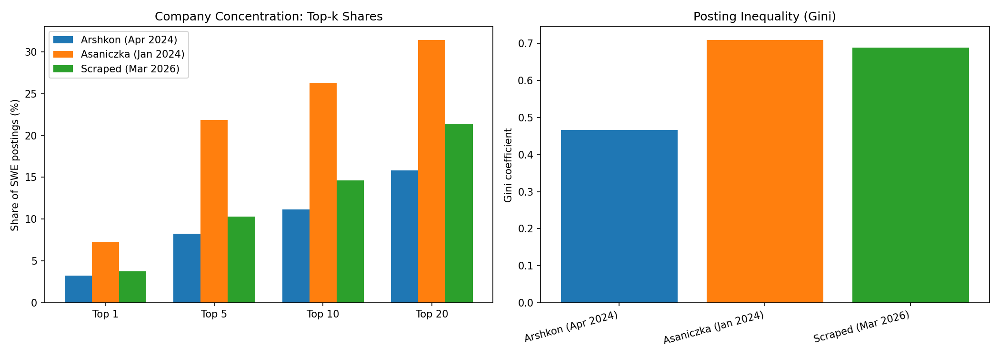
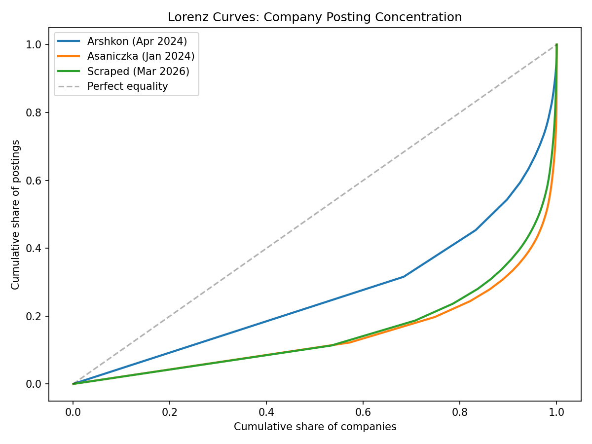

T06: Company Concentration
Source: data/unified.parquet (Stage 11, 99 columns, ~1.40M rows)
Date: 2026-04-05
Sample: SWE postings, LinkedIn, English, date_flag=ok
Counts: Arshkon 5,019 | Asaniczka 23,213 | Scraped 24,095
Summary of Findings
Company posting concentration varies significantly across datasets. Asaniczka is the most concentrated (Gini=0.71, top-5 share=21.9%), driven by staffing aggregators like Recruiting from Scratch (7.3%) and Jobs for Humanity. Arshkon is the least concentrated (Gini=0.47, top-5=8.3%). Scraped falls in between (Gini=0.69, top-5=10.3%).
Key findings: 1. Aggregators are the main concentration driver. Asaniczka has 27.3% aggregator share vs 11.8% arshkon and 14.6% scraped. Aggregator postings have systematically different properties (shorter descriptions, higher entry-level rates). 2. Within-company analysis shows entry share declining from 2024 to 2026 in overlap companies (25.0% arshkon to 13.2% scraped), the opposite direction from the raw cross-dataset comparison. 3. Company-capping has minimal effect on seniority distributions, confirming that concentration does not drive the observed seniority differences. 4. 70% of 2026 companies are new relative to both 2024 datasets, accounting for 43% of postings.
1. Concentration Metrics
| Metric | Arshkon (Apr 2024) | Asaniczka (Jan 2024) | Scraped (Mar 2026) |
|---|---|---|---|
| Number of companies | 2,298 | 4,946 | 5,100 |
| Total postings | 4,971* | 23,213 | 24,095 |
| HHI (x10,000) | 29.25 | 139.92 | 41.84 |
| Top-1 share (%) | 3.28 | 7.32 | 3.75 |
| Top-5 share (%) | 8.26 | 21.86 | 10.30 |
| Top-10 share (%) | 11.64 | 28.42 | 16.37 |
| Top-20 share (%) | 15.84 | 31.43 | 21.39 |
| Gini coefficient | 0.4662 | 0.7096 | 0.6892 |
*Arshkon total excludes 48 rows with null company_name_canonical.
Interpretation
All three datasets show moderate concentration (no HHI exceeds 140/10,000), well below what would indicate monopolistic posting behavior. However, asaniczka's concentration is driven almost entirely by staffing aggregators: Recruiting from Scratch alone accounts for 7.3% of all SWE postings. After excluding aggregators, concentration would drop substantially.
The scraped data's Gini (0.69) is close to asaniczka's (0.71) despite lower top-k shares, indicating a long tail of small companies alongside moderately large employers.


2. Companies with >3% SWE Posting Share
| Source | Company | Postings | Share (%) |
|---|---|---|---|
| Arshkon | DataAnnotation | 163 | 3.28 |
| Asaniczka | Recruiting from Scratch | 1,699 | 7.32 |
| Asaniczka | Capital One | 1,679 | 7.23 |
| Asaniczka | ClearanceJobs | 920 | 3.96 |
| Scraped | Jobs via Dice | 903 | 3.75 |
Observations
- Only one company exceeds 3% in any single dataset (aside from aggregators). In asaniczka, Capital One (7.2%) is the sole non-aggregator above 3%, inflated by its high job posting volume.
- In arshkon, DataAnnotation (3.3%) is a crowdsourcing/data-labeling platform, essentially an aggregator.
- In scraped, Jobs via Dice (3.8%) is the only dominant entity, clearly an aggregator.
- No organic employer exceeds 3% in either arshkon or scraped. This is reassuring for generalizability.
3. Within-Company Seniority Comparison (Overlap Set)
Restricted to the 110 companies with at least 5 SWE postings in both arshkon and scraped.
Aggregate Seniority in Overlap Companies
| Seniority | Arshkon n | Arshkon % | Scraped n | Scraped % |
|---|---|---|---|---|
| entry | 316 | 25.0 | 657 | 13.2 |
| associate | 50 | 4.0 | 134 | 2.7 |
| mid-senior | 892 | 70.6 | 4,124 | 83.0 |
| director | 6 | 0.5 | 55 | 1.1 |
Interpretation
This is the cleanest available test of seniority change. By restricting to the same companies across periods, we control for company composition effects. The results show:
- Entry share declines from 25.0% to 13.2% in overlap companies, a 11.8 percentage point drop. This is larger than the raw cross-dataset decline (20.4% to 14.5%) and strongly suggests a real decrease in entry-level SWE postings within established companies.
- Mid-senior share increases from 70.6% to 83.0%, absorbing the entry-level decline.
- Associate and director shares are small and relatively stable.
Caveats: The overlap set (110 companies, 1,264 arshkon postings, 4,970 scraped postings) is small relative to the full datasets. Overlap companies are biased toward larger, more established firms that maintained hiring across both periods. This design cannot capture new-entrant effects.
The full within-company seniority table is saved to exploration/tables/T06/within_company_seniority.csv.
4. Company-Capped Sensitivity Analysis
Seniority distribution after capping each company at 10 postings, to test whether a few high-volume companies drive the observed distributions.
Results (Excluding Unknown Seniority)
| Source | Method | Entry % | Associate % | Mid-Senior % | Director % | Total |
|---|---|---|---|---|---|---|
| Arshkon | Uncapped | 20.48 | 5.55 | 73.43 | 0.54 | 4,039 |
| Arshkon | Capped (10) | 19.05 | 6.12 | 74.25 | 0.57 | 3,511 |
| Asaniczka | Uncapped | 0.56 | 6.25 | 92.80 | 0.39 | 23,213 |
| Asaniczka | Capped (10) | 0.68 | 8.07 | 91.05 | 0.19 | 11,939 |
| Scraped | Uncapped | 14.49 | 2.77 | 81.76 | 0.99 | 22,469 |
| Scraped | Capped (10) | 13.77 | 3.12 | 82.19 | 0.92 | 13,075 |
Interpretation
Company capping has minimal effect on seniority distributions. The entry share changes are small: - Arshkon: 20.48% to 19.05% (-1.4pp) - Scraped: 14.49% to 13.77% (-0.7pp)
The arshkon-to-scraped entry share gap narrows slightly (5.9pp uncapped to 5.3pp capped) but remains substantial and significant. This confirms that the seniority difference is not driven by a few high-volume companies posting disproportionately at one level.
5. Aggregator Analysis
Aggregator Share by Source
| Source | Aggregator Postings | Total | Aggregator Share |
|---|---|---|---|
| Arshkon | 591 | 5,019 | 11.8% |
| Asaniczka | 6,340 | 23,213 | 27.3% |
| Scraped | 3,517 | 24,095 | 14.6% |
Top Aggregators by Source
Arshkon: DataAnnotation (163), Dice (62), Apex Systems (52), Motion Recruitment (42), TCS (39)
Asaniczka: Recruiting from Scratch (2,084), Jobs for Humanity (1,839), ClearanceJobs (930), ClickJobs.io (483), Dice (286)
Scraped: Jobs via Dice (1,966), Lensa (337), Actalent (128), Motion Recruitment (100), Jobot (97)
Aggregator vs Non-Aggregator Profile
| Source | Type | n | Mean Desc Length | Entry % (of known) |
|---|---|---|---|---|
| Arshkon | Aggregator | 591 | 2,439 | 42.8% |
| Arshkon | Non-aggregator | 4,428 | 3,433 | 17.6% |
| Asaniczka | Aggregator | 6,340 | 4,411 | 0.2% |
| Asaniczka | Non-aggregator | 16,873 | 3,917 | 0.7% |
| Scraped | Aggregator | 3,517 | 4,135 | 26.7% |
| Scraped | Non-aggregator | 20,578 | 5,386 | 12.3% |
Key Findings
-
Aggregator postings are systematically different. They have shorter descriptions (by ~1,000 chars in arshkon, ~1,250 in scraped) and much higher entry-level rates (42.8% vs 17.6% in arshkon, 26.7% vs 12.3% in scraped).
-
Aggregators inflate entry-level counts. In arshkon, aggregators account for 11.8% of postings but produce 42.8% entry-level (among their known-seniority rows). This means aggregator handling is critical for accurate seniority analysis.
-
Asaniczka aggregator anomaly: Asaniczka has 27.3% aggregator share -- more than double the other sources. Its top aggregators (Recruiting from Scratch, Jobs for Humanity) are not prominent in arshkon or scraped. This likely reflects asaniczka's broader search terms capturing more staffing-firm postings.
-
The aggregator composition difference between sources is itself a potential confounder. Since aggregators skew entry-level, the different aggregator shares (11.8% arshkon vs 14.6% scraped) could partially explain entry-level rate differences. Seniority analyses should be run both with and without aggregator postings.
6. New Entrants
Company Overlap Between 2026 and 2024
| Metric | Value |
|---|---|
| Scraped unique companies | 5,100 |
| New vs arshkon only | 4,287 (84.1%) |
| New vs all 2024 (arshkon + asaniczka) | 3,561 (69.8%) |
| New entrant postings (vs arshkon) | 13,545 (56.2% of scraped) |
| New entrant postings (vs all 2024) | 10,329 (42.9% of scraped) |
New Entrant Seniority Profile (vs Arshkon)
| Seniority | n | Share |
|---|---|---|
| mid-senior | 10,539 | 80.5% |
| entry | 2,084 | 15.9% |
| associate | 346 | 2.6% |
| director | 129 | 1.0% |
Interpretation
The majority of companies in 2026 are "new" relative to 2024 data, but this reflects sampling frame differences (see T05, Section 2) more than genuine market entry. With company Jaccard of only 0.12 between arshkon and scraped, most of the apparent "new entrants" are simply companies that existed in 2024 but were not captured by the arshkon Kaggle scrape.
New entrant seniority (15.9% entry among known) is comparable to the overall scraped entry rate (14.5%), indicating no systematic seniority skew among companies not appearing in 2024 data. The 43% posting share from new-vs-all-2024 companies means nearly half the scraped sample comes from companies we have no historical comparison for, limiting the power of within-company designs.
Concentration Summary and Recommendations
Overall Assessment
Company concentration is moderate and does not threaten analysis validity, provided standard precautions are taken:
-
No single organic employer dominates. The highest non-aggregator share is Capital One at 7.2% in asaniczka, which is exceptional. In arshkon and scraped, no organic employer exceeds 3%.
-
Aggregators are the primary concentration risk. They have systematically different characteristics (shorter text, higher entry rates). Analyses should be run with and without aggregators as a robustness check.
-
Company-capping has minimal effect. The 10-posting cap barely changes seniority distributions, confirming broad-based patterns.
-
Within-company analysis is the gold standard. The 110-company overlap set shows a clear entry-level decline (25% to 13%), controlling for company composition. This is the most credible estimate of seniority shift.
Recommended Robustness Checks for Downstream Analysis
- Run all seniority analyses with and without aggregator postings
- Report within-company results alongside cross-dataset comparisons
- Cap company contributions at 10-20 postings for sensitivity testing
- Flag that asaniczka cannot participate in seniority-based analyses
Output Files
- Figures:
exploration/figures/T06/ lorenz_curves.png-- Lorenz curves of company posting concentrationconcentration_metrics.png-- top-k share and Gini bar charts- Tables:
exploration/tables/T06/ concentration_metrics.csv-- HHI, top-k shares, Gini by sourcedominant_companies.csv-- companies exceeding 3% sharewithin_company_seniority.csv-- full company-level seniority comparisoncapped_sensitivity.csv-- uncapped vs capped seniority distributionsaggregator_profile.csv-- aggregator vs non-aggregator characteristicsnew_entrants.csv-- new company counts and shares